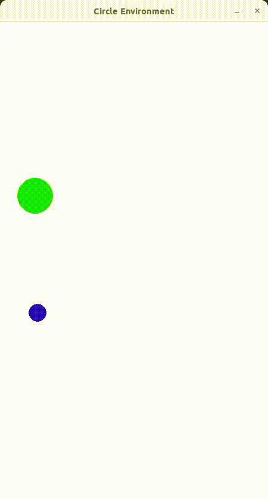

Premik agenta v ciljno točko
Koda posameznih funkcij v circle_world.py
__init__()
self.observation_space = spaces.Box(low=np.array([0.0, 0.0, 0.0, 0.0]), high=np.array([self.width, self.height, self.width, self.height]), dtype=np.float32)
target_radius_px = 30
self.create_circ_target(target_radius_px)
_get_obs()
agent_pos = self.get_agent_position()
target_pos = self.get_target_position()
return np.concatenate((agent_pos, target_pos))
reset()
self.reset_target((np.random.uniform(self.agent_radius*2, self.width - self.agent_radius*2), np.random.uniform(self.agent_radius*2, self.height - self.agent_radius*2)))
step()
if self.calc_distance(self.get_agent_position(), self.get_target_position()) < self.target_radius:
reward = 1.0
done = True
if self.current_step >= self.time_steps:
reward = -1.0
done = True
_render_frame()
Nastavitve učenja
Izhodiščne vrednosti za učenje:
model = PPO('MlpPolicy',
env=env,
tensorboard_log=logdir,
verbose=1,
n_steps=512,
batch_size=256,
gae_lambda=0.9,
gamma=0.99,
n_epochs=5,
ent_coef=0.0,
learning_rate=2.5e-4,
clip_range=0.3,
seed = 2)
Primer izpisa uspešnega učenja s PPO metodo:
-----------------------------------------
| rollout/ | |
| ep_len_mean | 54.9 |
| ep_rew_mean | 1 |
| time/ | |
| fps | 2638 |
| iterations | 8 |
| time_elapsed | 1 |
| total_timesteps | 577536 |
| train/ | |
| approx_kl | 0.012461845 |
| clip_fraction | 0.052 |
| clip_range | 0.3 |
| entropy_loss | -2 |
| explained_variance | 0.993 |
| learning_rate | 0.00025 |
| loss | -0.00576 |
| n_updates | 5635 |
| policy_gradient_loss | -0.00652 |
| std | 0.66 |
| value_loss | 0.000254 |
-----------------------------------------
Potek učenja za tarčo velikosti 30 px

Potek učenja za tarčo velikosti 15 px

